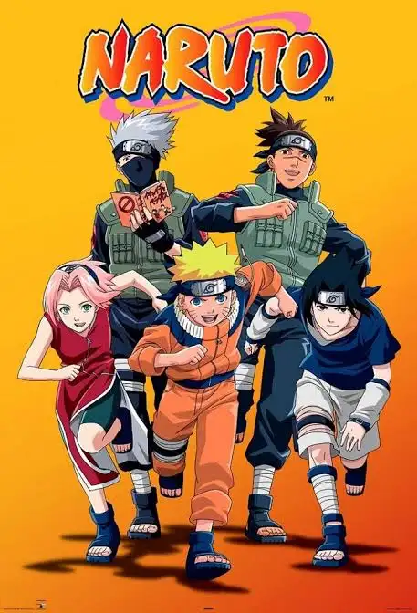
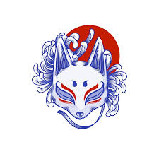

Naruto
Naruto Uzumaki sonha em se tornar Hokage enquanto enfrenta desafios, rivalidades e guerras ninja ao lado de seus amigos.
Ver mais

Naruto Uzumaki sonha em se tornar Hokage enquanto enfrenta desafios, rivalidades e guerras ninja ao lado de seus amigos.
Ver mais
A humanidade luta para sobreviver contra titãs gigantes enquanto segredos sobre o mundo e sobre os próprios humanos começam a surgir.
Ver mais
Light Yagami encontra um caderno capaz de matar qualquer pessoa e inicia uma batalha intelectual contra o misterioso detetive L.
Ver mais